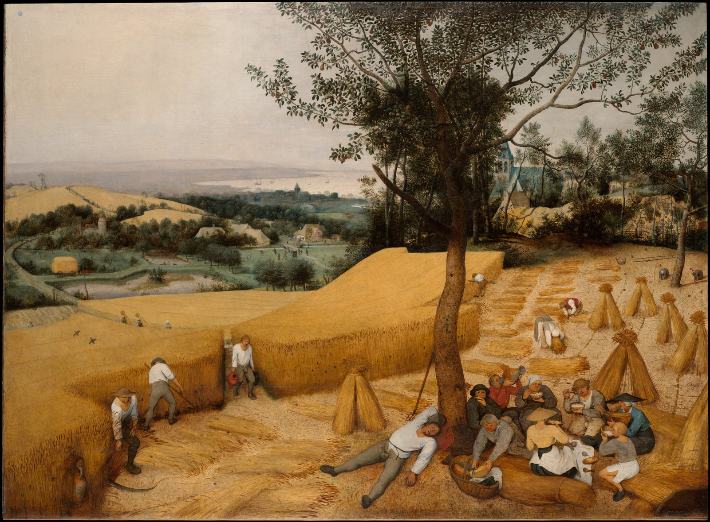

How Much Is Enough?
Much of the benefit comes early.

Most arrives early
What does “enough” mean?
Where does more begin to add less? Some studies show a flatter region. Others cannot establish a cutoff. The charts keep those differences visible.
Headlines use published guidance or broad research findings. Shading and whiskers show uncertainty; dashed lines identify models. The protein curve compares lifting studies, without establishing an exact daily cutoff.
Click or drag across a chart to move its marker. Arrow keys change the amount; Home and End select the endpoints.
Loading the curves. Read the source data.
Sources, method and painting
Risk charts show relative differences in observed study groups, not personal odds or proof of causation. Published groups stay groups. No chart endpoint is treated as 100% of possible benefit.
Protein compares modeled lean-mass changes across lifting trials. Savings is arithmetic under stated assumptions. Claim-by-claim evidence audit. Source data and calculations.
Pieter Bruegel the Elder, The Harvesters, 1565. The Metropolitan Museum of Art, Rogers Fund, 1919. Public domain.
Evidence audited October 5, 2026. Compare paintings, opening topics and colors.